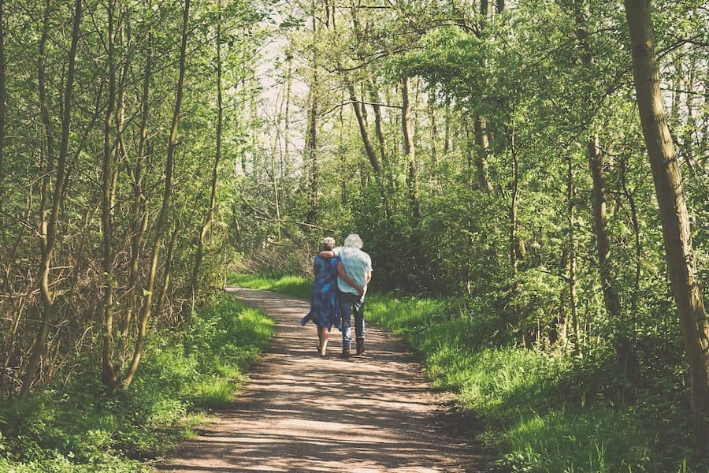
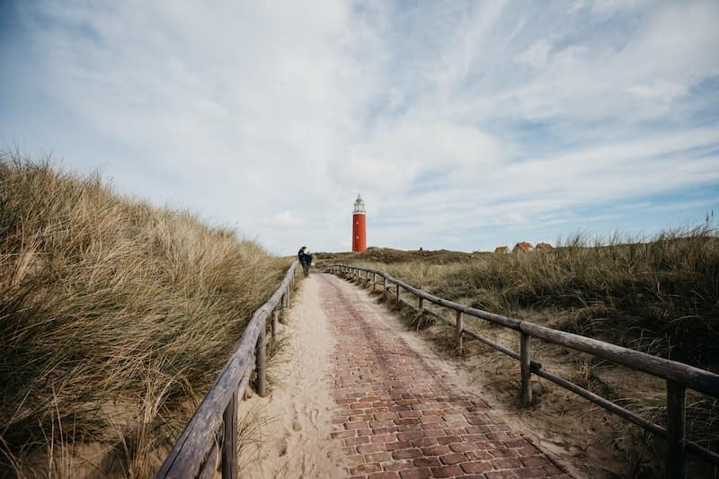
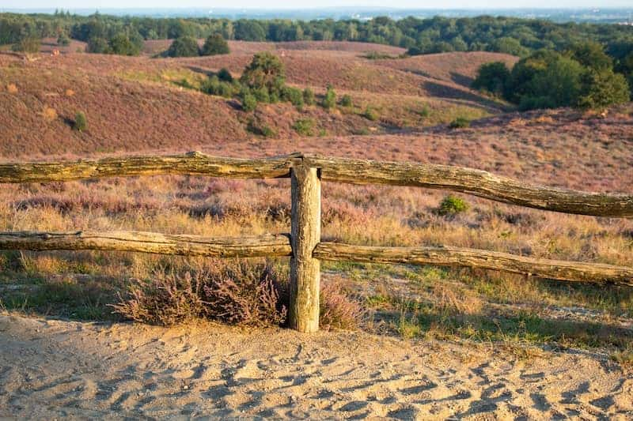
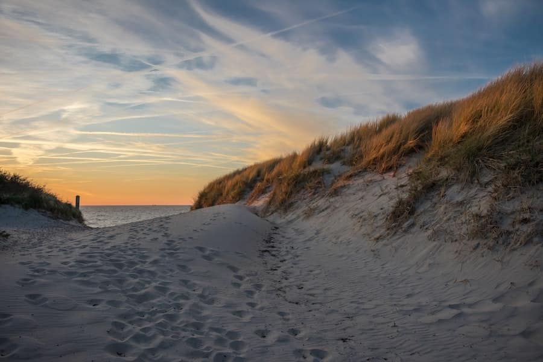

Best Electric Bike Routes in the Netherlands
The Netherlands is famous for its extensive, exceptionally well-organised and perfectly maintained cycle paths that criss-cross the entire country - and, of course, for being…

The Netherlands is famous for its extensive, exceptionally well-organised and perfectly maintained cycle paths that criss-cross the entire country – and, of course, for being an incredibly flat place! Clearly marked, signposted, and, generally speaking, entirely separated from the vehicle roads, riding an ebike on bike paths in the Netherlands is a joy.
I’ve lived in the Netherlands for 10 years, and during that time I’ve explored a great deal of the country on my ebike. The speed and convenience of modern electric bikes means you can travel a sizeable portion of a small country like the Netherlands in just one day.
What’s more, the Netherlands boasts an efficient, well-connected rail network, which, for just €10 extra (the price for bringing a non-foldable bike on the train) can return you to your starting destination after a long day of zooming across the country on your ebike.
Today I’m going to share with you some of my favourite ebike routes in the Netherlands so that you can get out on your electric bike (“elektrische fiets” in Dutch) and enjoy them too.
eBiking in Amsterdammse Bos
If I may, I’ll begin by sharing one of my favourite spots, located on the edge of the city where I live, The Amsterdammse Bos – or in English: The Amsterdam Forest.
The Amsterdam Forest was planted by hand in the 1930s and boasts 50km of smooth tarmac cycling trails, along with footpaths and horse-riding routes. The cycling trails lead you through the patchwork of forest, open grassland, waterways, and marshy reed land that comprises the Amsterdammse Bos.

The forest is three times the size of Central Park in New York, covering an area of 1000 hectares. The park was first imagined by Dutch botanist Jac Thijsse, who believed the city of Amsterdam needed a green space for residents to escape to from time to time.
And indeed, the Amsterdammse Bos is the perfect place to escape the hustle and bustle of life in Amsterdam without leaving the city’s boundaries. Enjoy a picnic on the grass in the summer, or cycle through the forest in autumn to admire the rich autumnal colours the forest offers.
Unfortunately, in the Netherlands, many of the forests have disappeared – cut down to make space for industrial agriculture and modern cities. The few forests that are left are a reminder of the natural beauty that once covered this now highly industrialised country. I recommend enjoying what’s left of the forests by ebike as often as you can!
If you don’t own an ebike there are plenty of places in Amsterdam where you can rent an ebike. Check out my guide to renting an ebike in Amsterdam.
Read more about the Amsterdammse Bos here.
Cycling on Texel and other Dutch Islands
The Dutch islands are a popular holiday destination for people living in the Netherlands. Every year thousands of Dutch people depart from their comfortable urban residences to enjoy the peace and serenity of the Dutch islands. The most popular of the islands is Texel, which boasts over 140km (87 miles) of cycle paths. The paths wind through the dunes, forests, and along the beaches that surround the island.

If you don’t own an electric bike it is possible to rent an ebike on Texel. Renting an ebike on Texel costs around €18 per day, depending on the rental shop. You will also be asked for a deposit of €50.
For the adrenaline seekers out there, Texel offers a superb MTB (Mountain Biking) route – the longest in North Holland! Put your electric mountain bike to the test on Texel’s dunes. You’ll love it.
eBiking in the Veluwe
The Veluwe is one of the most beautiful areas of the Dutch interior – this fact was recently confirmed by a vote! The Veluwe is perfect for some casual, easygoing ebiking all the year round.
Ride your electric bike along the Veluwe’s numerous sandy tracks, open roads, and cycle paths for a chance to see the nature on offer. The area offers many natural delights to watch out for, including foxes, badgers, wild boar, deer, cattle, and beavers, along with hundreds of species of birds. As well as the fauna, there is a wide variety of flora on display. The Veluwe is home to both deciduous forests and coniferous forests, along with wet and dry heaths.

Learn more about the Veluwe here.
Crossing the Oosterschelde Barrier on an eBike
The Oosterschelde Barrier is a marvellous feat of engineering and human ingenuity. It was built to prevent storms from flooding the Netherlands and the concrete and steel construction is a sight to behold; and since this is the Netherlands, you can, of course, cycle over the barrier and observe it up close and personal.
Unlike other flood protection constructions, the Ossterschelde barrier allows the water to flow freely, preventing the build up of water on the inside that a normal dam would cause. This clever design allows the water behind the barrier to maintain its salinity, thus preserving the habit of all the saltwater plants and fish living in the estuary behind the barrier.
The barrier itself is 8km (5 miles) long, so crossing it on your electric bike won’t take long. Once you’ve finished exploring the architectural magnificence of the barrier, you can continue cycling in the surrounding area. Within 7km of the barrier is the Walcheren, an area famous for its many beaches. You can ride your ebike through the Walcheren dunes and even stop for a quick swim before you continue with your ride.

eBiking on the Dutch Coastal Route
The Dutch Coastal Route. Wow. Part of the North Sea Cycle Route, the Dutch Coastal Route stretches 610km (279 miles) along the Dutch coast. This long-distance route combines two of the national cycle routes in the Netherlands: the LF1, the LF10.
The route begins in Sluis, in Zeeland, and ends in Nieuweschans, in Groningen. If you choose to embark on this epic journey with your ebike, you will pass through dunes and beaches, and cycle over huge bridges, all the while observing the sea on your left.
With an electric bike, this exceptional journey becomes accessible to almost any cyclist. If you don’t have time to complete the journey in one go, then hop on the train to the starting point and split the route up into manageable chunks – that’s what I did!
It’s an epic journey and a great opportunity to put your electric bike to the test on a long trip.
eBiking in the Netherlands
Now that you know the best electric bike routes in the Netherlands, start planning your next ride today. Don’t let the legendary Dutch tegenwind (headwind) put you off. With a good ebike as your trusty steed, you’ll be able to handle anything. Good luck!